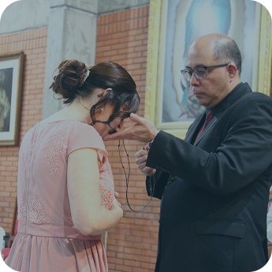

Vocacional
Você já sentiu Deus chamando você para algo maior?
O Encontro Vocacional da Comunidade Pantokrator está chegando! Dois dias para mergulhar no Amor Poderoso de Deus, conhecer mais sobre o Carisma, escutar Sua voz e discernir o caminho que Ele preparou para você. Se o seu coração arde por algo mais, este é o seu momento!
Não deixe esse chamado passar!